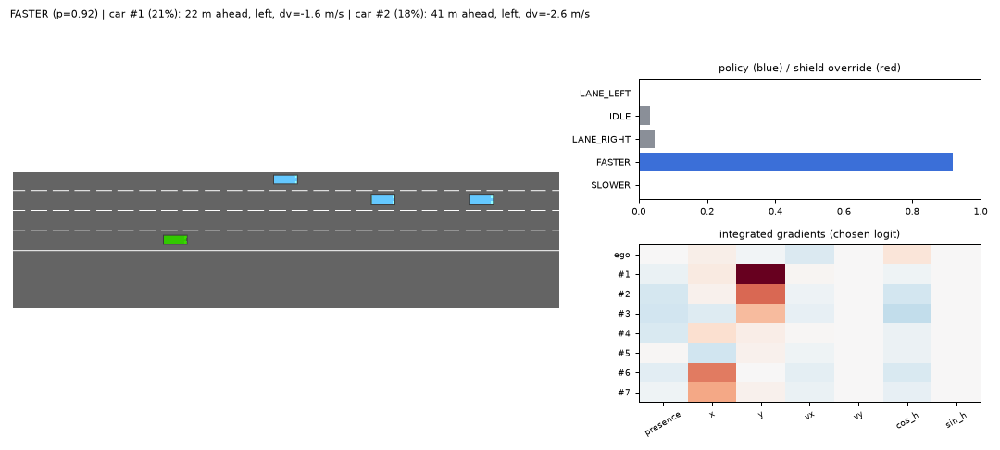
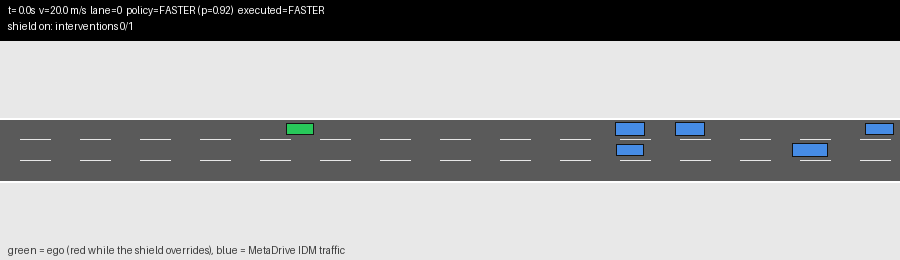

The project in plain English
A program learns to drive in a simulator by trial and error. A second program, a short list of hand-written safety rules, checks every one of its decisions. Then the learned driver is packaged so it could run inside real vehicle software.
This page assumes no background. The technical report, with every table and chart, is here. Terms in bold are explained at the end.
In short
- On a simulated highway, the learned driver crashed in 45% to 87% of drives on its own. With the safety rules checking it, it crashed in none, at a cost of driving about 2 m/s slower.
- The safety rules also held up when the driver's sensors were noisy, when cars went unseen, when its commands arrived late, and when traffic doubled.
- At an unsignalised intersection, every trained driver learned a bad habit: drive straight through at top speed. The safety rules could not fix that. The project reports it as a failure.
- One driving decision takes 33 millionths of a second on an ordinary laptop processor, thousands of times faster than the two decisions per second it needs.
- Moved to a different simulator without any retraining, the learned driver crashed in most drives. The same safety rules cut that by more than half.
The problem: driving in traffic
The simulator, highway-env, shows roads from above. It has three practice situations:
| Situation | What happens | A drive counts as a success if |
|---|---|---|
| Highway | Several lanes, slower cars to overtake | 40 seconds pass without a crash |
| Merge | Cars join from a side road | The car passes the merge without a crash |
| Intersection | No traffic lights, cars crossing from the side | The car crosses in time without a crash |
Two more situations, a roundabout and a very crowded highway, were never used for practice. They are only for testing.
What the driver sees: a small table of numbers. For itself and the 7 nearest cars it gets position, speed and direction. There is no camera image.
What the driver can do: five commands, twice per second. Change to the left lane, keep going, change to the right lane, speed up, slow down. The simulator turns each command into steering and throttle.
The parts of the system
- The learned driver. It practises thousands of drives. It earns points for driving fast and staying in the right lane, and it loses points for crashing. This is reinforcement learning. Two versions were trained: PPO, which looks only at the present moment, and RecurrentPPO, which also has a short memory.
- The safety shield. About 150 lines of fixed rules, with no learning in them. Before a command is carried out, the shield checks it against distances and speeds. If the command is dangerous, the shield swaps in a safe one and writes down which rule fired.
- The explanation. For each decision, a method called integrated gradients measures which of the numbers the driver saw pushed it most towards that decision. The result becomes one readable line, such as "speed up, mostly because of the car 22 m ahead in the left lane".
- The packaging. The driver is converted to ONNX, a standard file that any language can run. It is then sped up with TensorRT on a graphics card and run inside a ROS2 program written in C++, the kind of software used in robots and vehicles.
One decision, step by step
- The simulator writes the positions and speeds of the nearest cars into the table.
- The learned driver gives each of the five commands a probability, for example "speed up: 92%".
- The shield reads its own, separate copy of the distances and speeds. Suppose a car ahead is close and slower: at this speed the two would touch in under 2.5 seconds. The shield blocks "speed up" and picks the safest command the driver also liked, here "slow down".
- If a crash is less than 1.5 seconds away, the shield also brakes hard, beyond what the five commands allow.
- The command is carried out. What the driver wanted, what was actually done, and which rule fired are all recorded.

The safety rules
| Rule | Fires when | It forbids |
|---|---|---|
| Time to collision | Our car would reach the car ahead in under 2.5 s at the current speeds | Speeding up and keeping speed |
| Following distance | The gap is shorter than 4 m plus 0.6 s of travel | Speeding up |
| Crossing traffic | A car from the side would come within 3 m in the next 2.5 s | Speeding up and keeping speed |
| Lane change | The target lane is occupied, or a car there is closing in fast | That lane change |
| Emergency brake | A crash is less than 1.5 s away | Nothing. It brakes hard. |
Slowing down is never forbidden, so a safe choice always exists. The same rules were rewritten in C++ for the vehicle program and checked against the original on 2400 situations. They agreed on every one.
What came out
On the practice roads
| Situation, driver | Rules off | Rules on |
|---|---|---|
| Highway, PPO | 45% | 0% |
| Highway, RecurrentPPO | 87% | 0% |
| Merge, PPO | 0% | 0% |
| Merge, RecurrentPPO | 13% | 0% |
| Intersection, PPO | 25% | 23% |
| Intersection, RecurrentPPO | 25% | 28% |
RecurrentPPO, the version with memory, drove faster and crashed more. Memory makes a driver slower to learn, and its practice time here was short.
At the intersection, all six trained drivers learned to drive straight through at top speed. The rules make the car slow down, but then it runs out of time before crossing, and some side impacts still happen. This is reported as a failure, with ideas for fixing it.
When things go wrong
The drivers were also tested with blurry sensor readings, 20% of cars made invisible, commands arriving half a second late, and twice the traffic. On the highway, the learned drivers on their own crashed in up to 100% of drives. With the rules on, they crashed in 0% to 5%. One caveat matters: in these tests only the driver's view was blurred. The rules always read clean data, as a separately built safety sensor would provide. A safety sensor that is itself faulty was not tested.
Speed of a decision
On one core of a laptop processor, one decision takes 33 microseconds. On the graphics card it takes 0.4 to 0.9 milliseconds, because moving the data to the card and back costs more than the arithmetic. The graphics card only wins when it handles many decisions at once. Every packaged version made exactly the same decisions as the original.
The C++ vehicle program drove 20 of 20 drives without a crash, the same result as the original Python version.
In a different simulator
The same drivers and the same rules, with no retraining, were run in a second simulator, MetaDrive. There the cars are physically simulated and the other traffic behaves differently: it waits parked and starts moving as you approach. On their own, the drivers crashed in 75% (PPO) and 95% (RecurrentPPO) of drives. They kept speeding up towards slower cars, a situation they had never seen. With the rules on, crashes fell to 40% and 30%. Most of the remaining crashes came right after other cars had crashed into each other nearby.

What to keep in mind
- 3 trained drivers per setting and 20 drives each is a small sample. Small differences may be luck.
- The drivers practised for a short time, about 6 hours on a laptop for all 18 of them.
- The rules assume straight lanes. They are weak at intersections and roundabouts.
- Everything ran in simulation. Nothing here has been tested on a real vehicle.
Terms
- Reinforcement learning
- Learning by trial and error: the program tries actions, gets points, and keeps what earns more points.
- PPO, RecurrentPPO
- Two common reinforcement-learning methods. RecurrentPPO adds a short memory (an LSTM) so the driver can use what it saw a moment ago.
- Safety shield
- Fixed rules that check and, if needed, replace each decision of the learned driver.
- Time to collision
- The distance to the car ahead divided by how fast we are closing in on it.
- Integrated gradients
- A way to measure how much each input number pushed the driver towards its decision.
- Seed
- The starting value of the randomness. Training again with another seed gives a slightly different driver, which is why results are averaged over several seeds.
- ONNX
- A standard file format for trained models that many languages and devices can run.
- TensorRT
- NVIDIA's tool for running models faster on its graphics cards, optionally with smaller numbers (FP16, INT8).
- ROS2
- A standard framework that lets the programs in a robot or vehicle exchange messages.
- Docker
- A way to package a program with everything it needs so it runs the same on any machine.
- highway-env, MetaDrive
- The two driving simulators used. The driver practised only in highway-env.
- Active inference
- A different way to make decisions: instead of learning from points, the program is given a model of how the world works and picks actions that reduce its uncertainty. It was compared with PPO on a separate small problem; see the report.